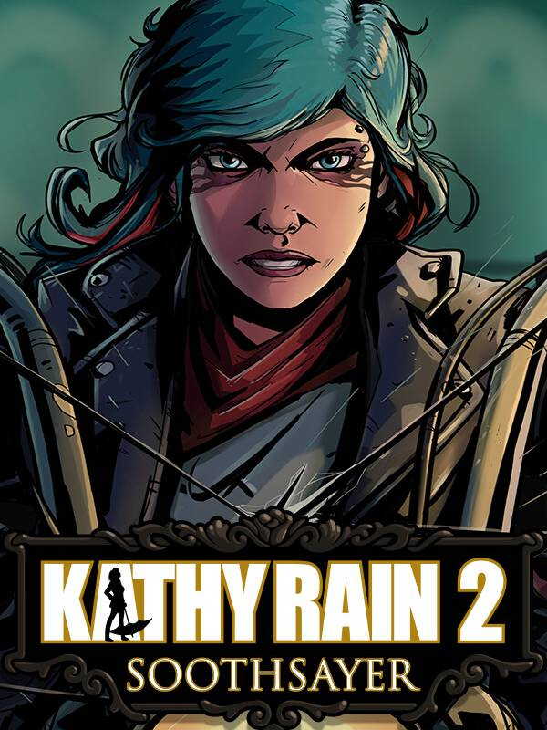

Kathy Rain 2: Soothsayer
Kathy Rain 2: Soothsayer
Details
|  | |
| Playtime | Not Played |
| Last Activity | Never |
| Added | 2025-05-21 13:08:30 |
| Modified | 2025-12-19 11:05:13 |
| Completion Status | Not Played |
| Library | Steam |
| Source | Steam |
| Platform | Macintosh PC (Linux) PC (Windows) |
| Release Date | 2025-05-20 |
| Community Score | |
| Critic Score | 87 |
| User Score | |
| Genre | Adventure Indie Point-and-click |
| Developer | Clifftop Games |
| Publisher | Raw Fury |
| Feature | Single Player |
| Links | Steam YouTube Discord Twitch Official Website Bluesky GOG |
| Tag | 1990's 2D Adventure Atmospheric Conspiracy Dark Detective Female Protagonist Horror Interactive Fiction Investigation Mystery Noir Pixel Graphics Point & Click Puzzle Retro Singleplayer Story Rich Thriller |
Description
Your favorite smart-mouthed, kick-ass detective is back, and she’s in for a wild ride!

When this story begins, things are looking dire for private eye Kathy Rain. It’s the year 1998, and she is utterly broke: The Katmobile is running on fumes, the fridge is nearly empty, and an eviction is looming close.
However, opportunity arrives when a big cash reward is announced for solving the 'Soothsayer' case — a string of serial murders with a death grip on the metropolitan city of Kassidy.
With great reward comes great risk — will this be the case that defines Kathy’s career, or will she become the next victim of the Soothsayer?

Point and click urban thriller – take on the second case with Kathy Rain in an all-new adventure that is as hard-hitting as it is emotional. Try the first game, right here on Steam, to get prepared for the second installment!
Improved graphics – See Kathy Rain as never before with a higher resolution pixel art style that complements Kathy's gritty world, alongside modern features such as dynamic lighting and surface reflections.
Stunning Cinematic Sequences – Watch the story unfold with beautiful hand-drawn cutscenes and character portraits.
Bigger than ever – Play through the longest Clifftop title yet with a deep narrative that spans many diverse locations and a wide range of characters.
Familiar voices – Arielle Siegel returns as Kathy Rain, alongside other familiar voices in supportive roles!
Make a note – Log interesting findings in Kathy’s notebook and refer to them in your investigation. Connect narrative threads for surprising and satisfying outcomes.